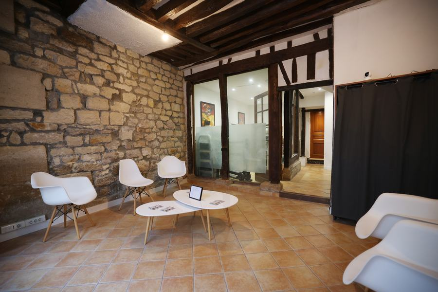

Le cabinet : accès, horaires & rendez-vous
Le cabinet vous accueille au cœur du 5ᵉ arrondissement, rue Broca. La prise de rendez-vous se fait en ligne ou par téléphone.
Coordonnées et accès
Y aller
- Métro — Censier-Daubenton (ligne 7)
- RER — Port-Royal (ligne B)
- Stationnement — parking des Patriarches, 37 rue Daubenton
Horaires
Consultations sur rendez-vous, du lundi au samedi, en français, anglais ou espagnol.
Les disponibilités à jour sont indiquées en temps réel sur Doctolib.
Plan
La carte est fournie par OpenStreetMap. Elle ne se charge que si vous le demandez.
Dans le bas de la rue Broca, à deux pas du boulevard de Port-Royal — à la frontière des 5ᵉ et 13ᵉ arrondissements.
Repérer le cabinet

Tarifs
| Bilan podologique | 80 € |
|---|---|
| Semelles orthopédiques sur mesure (bilan inclus), adulte | 230 € |
| Semelles orthopédiques sur mesure (bilan inclus), enfant | 170 € |
| Orthèses du membre supérieur, orthoplasties | Tarif fixe, communiqué au cabinet |
Règlement par carte bancaire ou en espèces. La carte Vitale n’est pas acceptée au cabinet. Semelles garanties six mois.
Ce qu’il est utile d’apporter
- Votre ordonnance
Si vous en avez une, ainsi que les comptes-rendus médicaux ou d’imagerie utiles.
- Vos chaussures habituelles
Notamment vos chaussures de sport — leur usure est une vraie source d’informations.
- Vos anciennes semelles
Si vous en portez déjà, apportez-les pour comparaison.
- Une tenue adaptée
De quoi dégager la jambe et le pied pour l’examen de la marche et de la course.

Réserver une consultation
La prise de rendez-vous en ligne indique les créneaux disponibles à jour. Vous pouvez aussi appeler le cabinet.